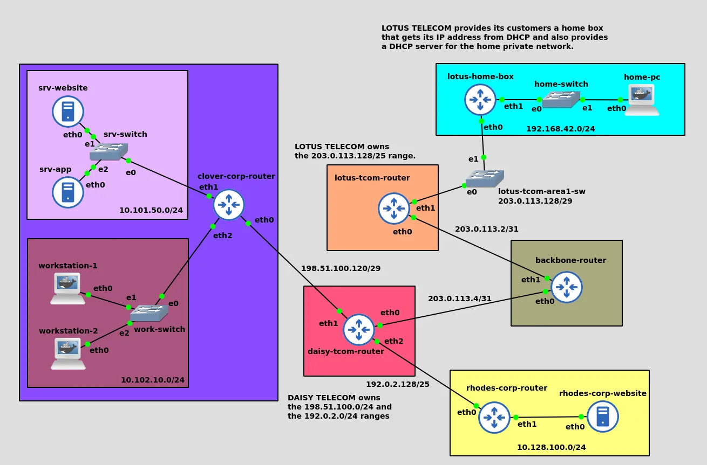

NetworkingClosed
Two companies, two ISPs, one backbone
A small internet in GNS3: two companies on a business ISP, a home on a consumer ISP, and a backbone in between. Every router configured by hand, with addressing that would make sense in the real world.
Where I learned that private addresses never cross the internet, why every leaf router only needs a default route, and how DNAT exposes one server without exposing the rest.

01Who is who
- Clover Corp. A server network (website, app) and an office network, behind one router doing NAT and filtering.
- Rhodes Corp. Only hosts a website.
- Daisy Telecom, a business ISP for both companies; Lotus Telecom, a consumer ISP for a home behind a box.
- Backbone, linking the two ISPs.
02Addressing
Private ranges inside, documentation ranges (198.51.100.0/24, 192.0.2.0/24, 203.0.113.0/24) standing in for public space, and link sizes chosen to fit: /31 for point-to-point router links, /29 where only a few hosts sit.
| Network | Range |
|---|---|
| Clover servers | 10.101.50.0/24 |
| Clover office (DHCP) | 10.102.10.0/24 |
| Rhodes servers | 10.128.100.0/24 |
| Home (DHCP) | 192.168.42.0/24 |
| Daisy ↔ Clover | 198.51.100.120/29 |
| Daisy ↔ Rhodes | 192.0.2.128/25 |
| Daisy ↔ Backbone | 203.0.113.4/31 |
| Backbone ↔ Lotus | 203.0.113.2/31 |
| Lotus customers (DHCP) | 203.0.113.128/29 |
03Routing
Leaf routers (Clover, Rhodes, Lotus) have one default route towards their upstream. Only aggregators carry explicit routes: Daisy knows its customers' networks and Lotus's public range; the backbone knows which public blocks belong to which ISP.
04NAT and filtering
| Router | NAT | Filtering |
|---|---|---|
| Clover | DNAT :80 → website · SNAT to a fixed IP | ICMP only to the router · servers can't reach the office · HTTP allowed to servers |
| Rhodes | DNAT :80 → website · SNAT | — |
| Home box | MASQUERADE (dynamic public IP) | — |
The end-to-end test: the home PC reaches Clover's website through Clover's public address, crossing two NATs, three ISP routers and the backbone.
ip route
iptables -L -n
iptables -t nat -L -n